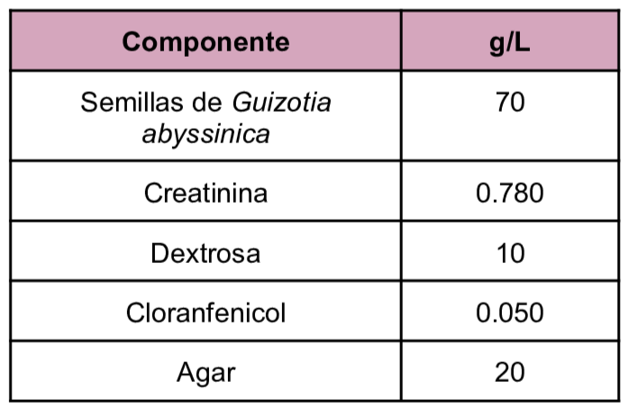
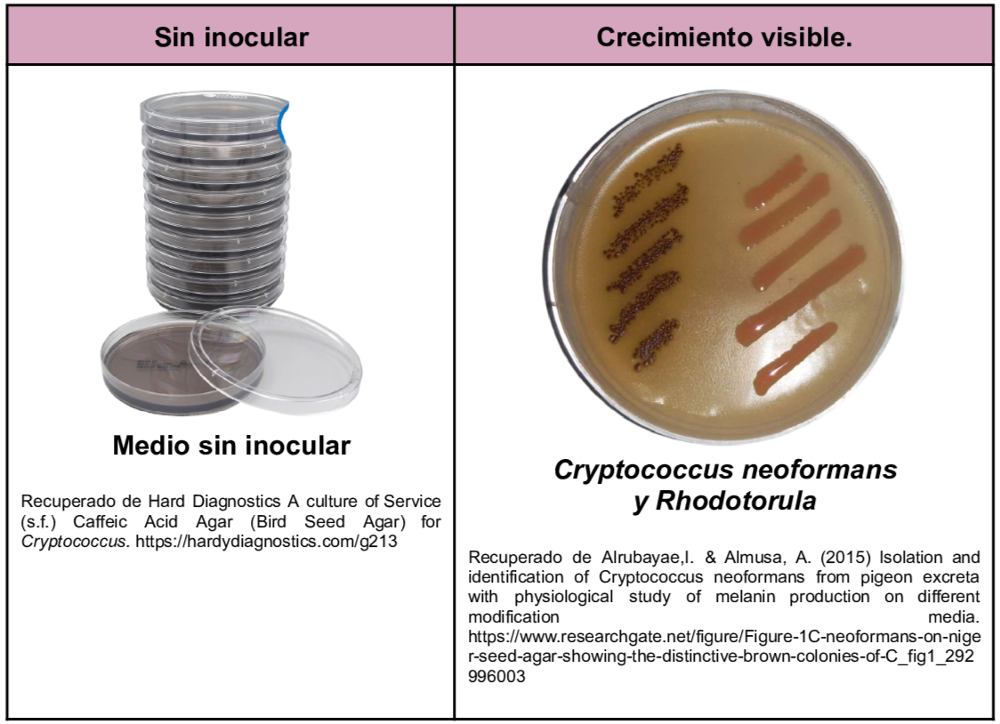

Es un medio selectivo y diferencial de Cryptococcus neoformans en muestras clínicas. La detección selectiva se da por la presencia del ácido cafeico y de la enzima fenoloxidasa presente en las especies de Cryptococcus ya que utilizan como sustrato diversos compuestos fenólicos y de ahí la producción de pigmentos de color marrón oscuro. Dentro de la composición se tiene glucosa como carbohidrato fermentable, la creatinina ayuda a potenciar la melanización de diferentes cepas de Cryptococcus neoformans y el cloranfenicol inhibe el crecimiento de bacterias y de otros hongos.
Composición

pH a 25°C 6.7±0.2
Resultados Posibles
El extracto de semillas de Guizotia abyssinica contiene ácido cafeico que es utilizado como sustrato de la enzima fenoloxidasa y produce melanina la cual es absorbida por la pared celular y formando una pigmentación de color canela a marrón rojizo
- Cryptococcus neoformans/ Cryptococcus gattii: Colonias lisas pigmentadas de marrón dorado a negro
- Cryptococcus laurentii/ Saccharomyces cerevisiae: Colonias no pigmentadas
- Candida spp.: Colonias blancas sin melanina
- Rhodotorula spp.: Colonias con pigmentación salmón/naranja

Referencias
Rijal, N. (2026) Bird Seed Agar (Niger Seed Agar): Composition, Uses, and Cryptococcus Identification. https://microbeonline.com/bird-seed-agar-principle-composition-uses/